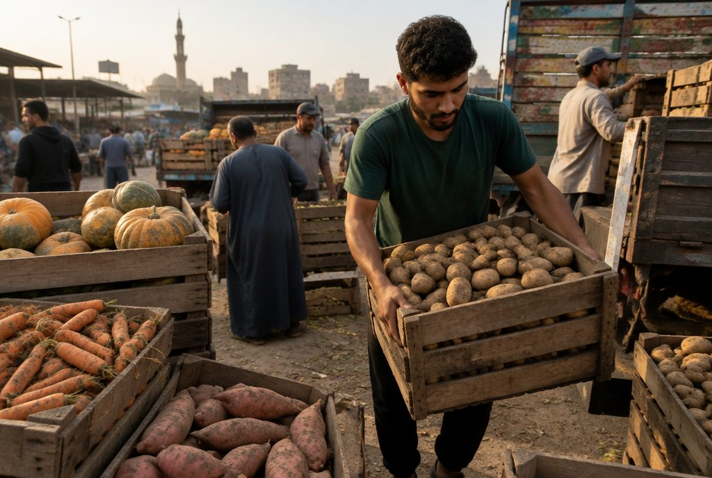
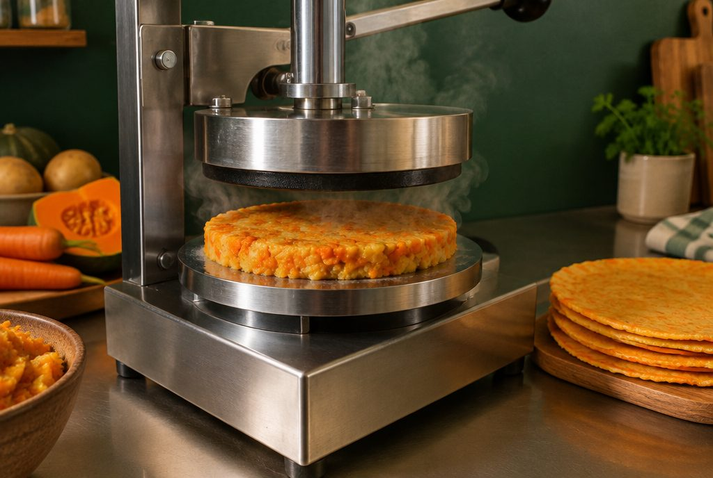
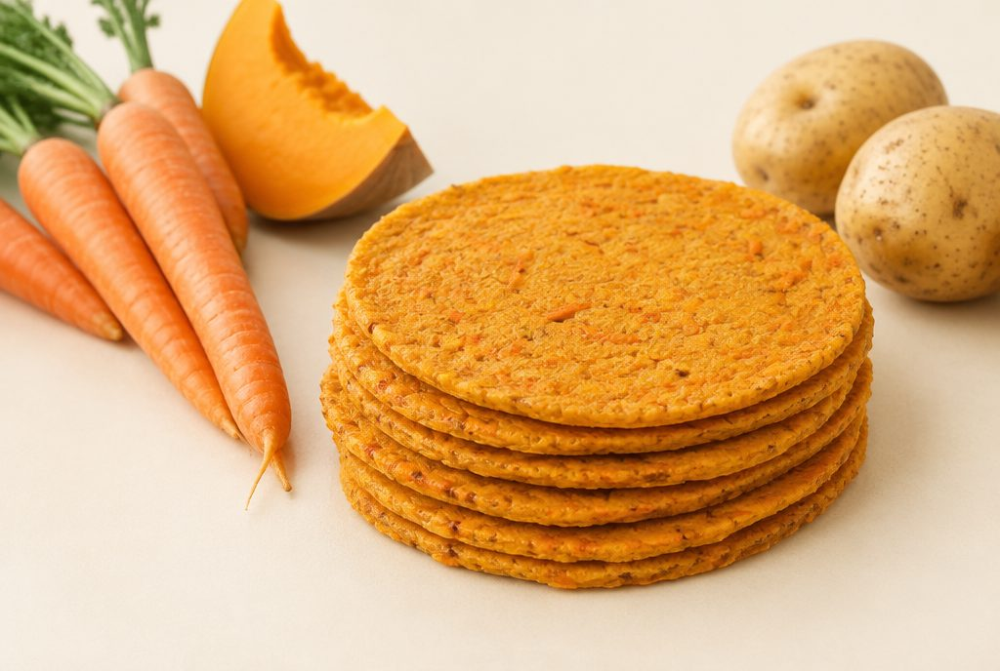
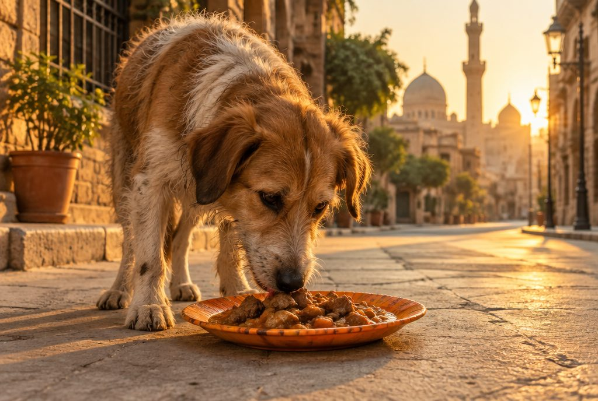
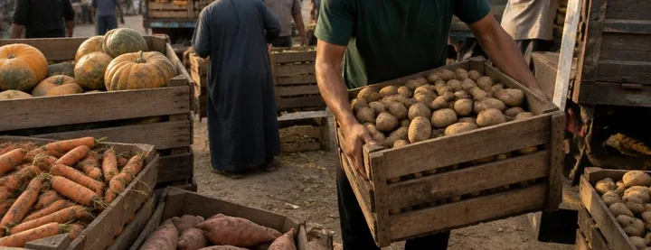
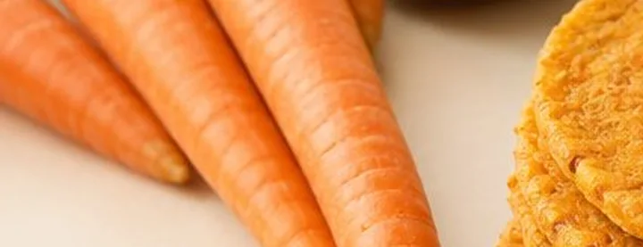
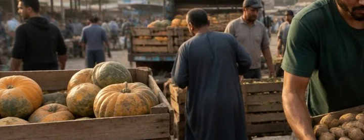
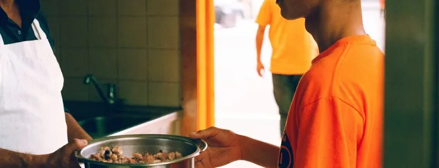

1
Rescue
Markets and farms throw away vegetables that are misshapen, too small or unsold. The plan is to collect them before they go to waste.
When we start feeding street dogs and cats in Cairo, we don't want to leave plastic or paper behind. So we plan to make plates from vegetables: rescued, pressed and baked into a plate the animal can eat once the meal is finished.
This is the plan. Nothing is running yet.
The plate is a prototype: what goes in, how strong it is, how clean it stays and how long it keeps all need testing first.
Every picture on this page is an AI concept until the first test bake gives us real photos.

Markets and farms throw away vegetables that are misshapen, too small or unsold. The plan is to collect them before they go to waste.

The vegetables are cooked, mashed and pressed in a heated plate press into thin, round plates.

The plates are baked until they are dry and strong enough to hold a meal.

Each animal gets its meal on a plate it can eat too. The aim is to leave nothing on the street.
The principle is simple: use what would otherwise be wasted.
We will only take vegetables we can trace and that pass our checks.

Cairo's big wholesale markets, starting with Obour, sell misshapen, small and bruised vegetables cheaply, especially at the end of the day. One early pickup can cover a whole day of plates.

At harvest, farms grade out "ugly" crops that shops won't take. Once the truck is running, the plan is to build direct deals with farms for larger volumes.

Supermarkets have small mixed lots of unsold stock. We see them as partners who help tell the story, not as the main supply.

Groups like food banks already collect surplus food, and it rightly goes to people first. We would only ask for surplus they cannot pass on to people, never anything spoiled.
This is the recipe we plan to test first.
It uses no special machines, just a kitchen, a mould and an oven.
Every plate is meant to be eaten, so every ingredient will be reviewed for dogs and cats before any plate is served.
Cats mostly ignore plates, and that is fine. What happens to a plate left behind is part of the test, and we will clean up after every stop.
Before a single plate goes on the street, we will test the recipe and film every step.
Plates made from vegetables already exist.
We are adapting the idea into a recipe we will test for animals and that we can make in Cairo.
A New Zealand company has sold plates and trays pressed from vegetable starch in heated moulds for years.
Belgian designers made a plate from vegetable starch, water and oil, strong enough to hold sauces.
A team in Buenos Aires pressed vegetable waste into plates that hold a meal and break down in soil.